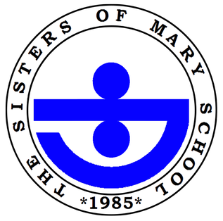
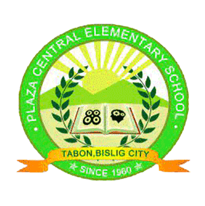

Good day! I am Maria Veronica B. Taboada. You may also call me Nica. I am currently taking up a diploma course which is DIST. I am a Filipino Catholic, residing at Purok 10-A Sug-obon, Tabon, Bislig City, Surigao del Sur.
Currently, I studied at ASCB with the course of Diploma in Information Technology. Recently, we have various resultants which are CSS NC II, Front Office NC II, Photography NC II and Web Development NC III.
I studied high school at the Sisters of Mary School-Girlstown, Inc. where I got my two NC's which are Bread and Pastry Production NC II and Dressmaking NC II.
I spend my elementary days at Plaza Central Elementary School. It was on the year 2009-2015.
